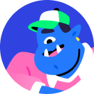

Ma plus grande contribution est la description des cas d'utilisation(CU). J'ai effectuée une première ébauche qui a servit de patron pour les ébauches subséquentes.
J'ai aidé mes parternaires à peaufiner la description des CUs. J'ai participé à plusieurs séances de brainstorming (dont celle du gloassaire ) pour les autres tâches à compléter.
Emmanuel

J'ai effectué l'entièreté du prototype par moi-même, sans aucune contribution de mes paternaires. J'ai assisté Franz dans la révision du Diagramme de CUs, pour
s'assurer que tous les cas d'utilisation à considérer étaient inclus et que les liens entre chaque élément de celui-ci étaient valides. J'ai effectué une première
ébauche des risques de la plateforme. J'ai aidé à peaufiner la description des cas d'utilisation, en ajoutant principalement
des cas d'utilisation du côté revendeur. J'ai participé au brainstorming du gloassaire
Franz
J'ai complété l'entièreté du Diagramme de CUs seul. J'ai effectué la révision du diagramme avec Emmanuel. J'ai complété le glossaire après
une séance de brainstorming. J'ai également contriué à la description des cas d'utilisation, en effectuant la dernière itération de celui-ci. J'ai fait
une description détaillée des risques, à partir de l'ébauche d'Emmanuel. J'ai effectué le code
de tous les documents .tex et suis responsable de chaque pdf correspondant. J'ai révisé et modifiéé l'ensemble des documents qui ont été produit tout au long du projet, afin de produire une version finale
de tous ce qu'il y avait à inclure dans le rapport. Je suis reponsable de l'entièreté du code Html, Css et Javascript du rapport.
J'ai effectué des modifications au rapport plus ou moins majeures les deux derniers jours avant la remise, en fonction des changements de dernières minutes des fichiers de l'équipe. J'ai organisé l'ensemble des fichiers
à zipper pour la remise et effectué les résolutions de merge conflits après avoir tout poussé dans la branche principale, le jour de la remise.J'ai coordonné la communication entre
les membres du groupe et j'ai assuré la maintenance du répertoire sur Github.
.
Glossaire
0%
15%
15%
70%
Diagramme de CU
0%
0%
15%
85%
Description de CU
0%
60%
25%
15%
Description des risques
0%
0%
50%
50%
Besoins non-fonctionnels
95%
0%
0%
5%
Rapport
0%
0%
0%
100%
Révisions et corrections
0%
15%
35%
50%
Activité Github
10%
20%
35%
35%
Communication verbale et écrite
10%
25%
30%
35%
Hypothèses pour la Rédaction du Glossaire
La rédaction de ce glossaire pour la plateforme UniShop a été guidée par plusieurs hypothèses clés. Nous avons
supposé que les utilisateurs de la plateforme comprendraient principalement deux catégories : les
acheteurs, cherchant à acquérir des produits ou services, et les revendeurs, offrant
ces produits ou services à la vente. Il a été envisagé que les échanges entre ces deux entités se feraient
par le biais de transactions, supervisées par le vendeur principal, qui représente la plateforme
elle-même. Le processus d'achat serait formalisé par des commandes précisant les détails de chaque achat.
Par ailleurs, l'importance des éléments structurants a été reconnue, étant donné qu'ils contribuent
à l'expérience globale de l'utilisateur, favorisant ainsi une navigation et un processus d'achat optimisés.
Une attention particulière a également été accordée à la notion de promotion, reconnaissant ainsi le
rôle essentiel de telles initiatives pour stimuler les ventes. Enfin, il a été anticipé que la plateforme
comporterait des mécanismes permettant aux acheteurs d'exprimer leurs évaluations des produits, ainsi
qu'un service après-vente pour garantir la satisfaction des clients après leur achat.
L'entité qui gère et exploite la plateforme Unibuy, facilitant les transactions entre les
acheteurs et les revendeurs, ainsi que la gestion de l'inventaire et des processus de paiement.
Promotions
Les promotions réfèrent à l'ensemble des activités et des mesures de gestion de prix visant à
mettre
de l'avant les articles en vente. Les promotions ont pour objectif d'accroître les ventes soit en
réduisant le coût des articles ciblés, ou encore en offrant davante d'articles ou de service
en contreparti. Les fournisseurs d'UniBuy et la plateforme elle-même sont tout deux
suceptibles d'offrir des promotions aux utilisateurs.
Transaction
Échange monétaire permettant à un tiers parti d'acquérir un bien ou un service.
Dans le contexte du développement de la plateforme Unibuy, les échanges s'effectuent
unilatéralement des acheteurs au vendeur principal (Unibuy) et bilatéralement des fournisseurs au
vendeur principal.
Élément stucturant
Un composant ou une fonctionnalité qui contribue à l'organisation et à l'efficacité de la
plateforme,
tels que les listes de souhaits pour améliorer l'expérience de navigation et d'achat, ainsi que les
catégories et les filtres pour la recherche de produits.
Revendeur
Une entité morale qui propose des
produits ou des services. Le revendeur utilise les fonctionnalités de gestion de profil
implémentée sur la plateforme pour mettre en vente un élément, consulter ses métriques et
gérer les requêtes d'acheteurs.
Acheteur
Un utilisateur qui recherche, sélectionne et achète des produits
ou services auprès des revendeurs, par l'intermédiaire de la plateforme.
Commandes
Des demandes d'achat spécifiques effectuées par les acheteurs, comprenant les détails sur
les produits sélectionnés et les informations nécessaires pour la livraison. Ces demandes
sont traitées par les revendeurs, de l'intiation de la demande à la livraison du produit.
Produit
Un bien tangible ou un service offert à la vente sur la plateforme Unibuy, pouvant inclure des
descriptions, des images et des informations sur le prix.
Service après vente
Les services et le support fournis aux acheteurs après l'achat, y compris le traitement des
retours, les réparations, les garanties et la résolution des problème
Évalutation de produit
L'opinion ou la note attribuée par un acheteur à un produit qu'il a acheté, souvent
accompagnée d'un commentaire décrivant son expérience et son avis sur le produit.
Panne de serveur : L'hypothèse principale est que la continuité du service est
essentielle à la fois pour les acheteurs et les revendeurs. Si le serveur est en panne,
cela entrave directement la capacité des utilisateurs à accéder aux services et à effectuer des
transactions, impactant ainsi les ventes, l'expérience utilisateur et la confiance en la
plateforme.
Sécurité et protection des données clients : L'intégrité et la confidentialité
des données des utilisateurs sont primordiales. L'hypothèse est que toute violation de ces données
pourrait gravement nuire à la réputation d'UniShop et entraîner une perte de confiance des
utilisateurs envers la plateforme.
Gestion erronée de l’inventaire : La précision de l'inventaire est cruciale pour
une expérience d'achat fluide. L'hypothèse sous-jacente est que des erreurs dans l'inventaire
peuvent entraîner une discordance entre l'offre et la demande, nuisant à la satisfaction des
utilisateurs et aux opérations des revendeurs.
Difficulté à trouver les politiques de retour et d’échange :
Une communication claire et accessible concernant les politiques est essentielle pour une
expérience utilisateur positive. L'hypothèse est que toute ambiguïté ou difficulté à localiser
ces informations pourrait diminuer la satisfaction des utilisateurs et, par conséquent, leur
fidélité envers UniShop.
Gestion inadéquate d’avis et commentaires d’utilisateurs :
La plateforme se base sur l'hypothèse que les avis et commentaires sont un outil essentiel pour
établir la confiance entre les acheteurs et les revendeurs. Une gestion inappropriée de ces
retours pourrait nuire à la réputation des revendeurs et influencer négativement la perception
des utilisateurs à l'égard de la plateforme.
L'utilisateur peut être dirigé vers la page d'inscription après une tentative d'effectuer
une commande sans être connecté ou après avoir cliqué sur un bouton spécifique.
La plateforme propose différents types de comptes.
Les informations de profil doivent être valides pour créer un compte.
Un courriel de confirmation est nécessaire pour compléter l'inscription.
Il peut exister des entrées d'information déjà présentes dans la base de données,
empêchant la création de compte.
Se connecter à la plateforme
Les utilisateurs doivent fournir des identifiants valides pour se connecter.
Il est possible qu'un utilisateur tente de se connecter avec des identifiants non enregistrés ou incorrects.
Les comptes peuvent être suspendus et dans ce cas, l'utilisateur ne pourra pas se connecter.
Modifier les informations du compte
L'utilisateur doit être connecté pour pouvoir modifier ses informations.
Les modifications doivent être valides pour être enregistrées.
Ajouter un produit au panier
Les utilisateurs doivent choisir une quantité pour ajouter un produit au panier.
Il peut ne pas y avoir suffisamment de stock pour la quantité demandée par l'utilisateur.
Hypothèses associées aux exigences non fonctionnelles
Sécurité
Les informations des utilisateurs, notamment les données de paiement et informations
personnelles, sont sensibles et nécessitent une protection accrue.
Il existe des menaces externes telles que l'usurpation de données et les activités
frauduleuses qui peuvent compromettre la sécurité de la plateforme.
Disponibilité
Les utilisateurs attendent que la plateforme soit accessible à tout moment pour
effectuer des opérations.
Les interruptions de service peuvent nuire à la réputation de la plateforme et à
l'expérience utilisateur.
Performance
Un grand nombre d'utilisateurs peut utiliser la plateforme simultanément.
Les mises à jour des inventaires doivent être rapides pour éviter des incohérences
pour les utilisateurs.
Les temps de réponse prolongés peuvent affecter l'expérience utilisateur.
Traçabilité
Il est essentiel de pouvoir suivre et enregistrer toutes les actions des utilisateurs
pour garantir la qualité et l'intégrité de la plateforme.
Accessibilité
L'accessibilité est une exigence pour assurer une expérience utilisateur équitable pour
tous, y compris pour les personnes handicapées.
La plateforme doit se conformer aux normes d'accessibilité web pour être considérée
comme accessible.